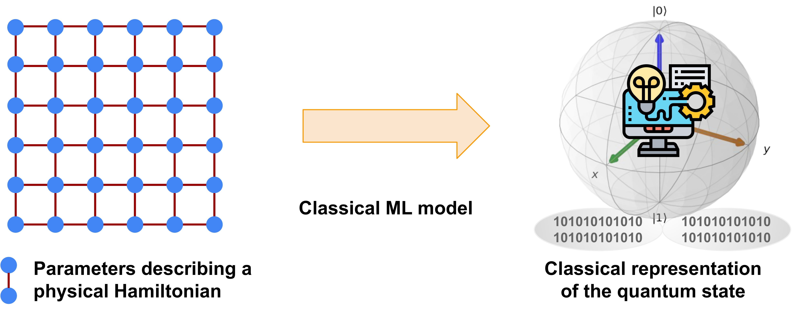
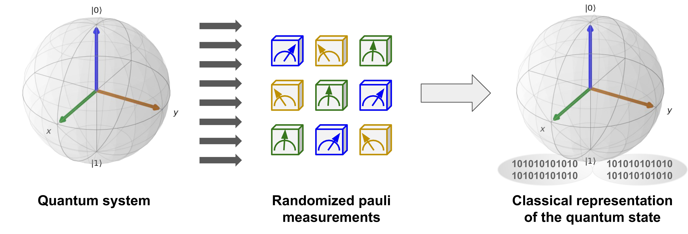
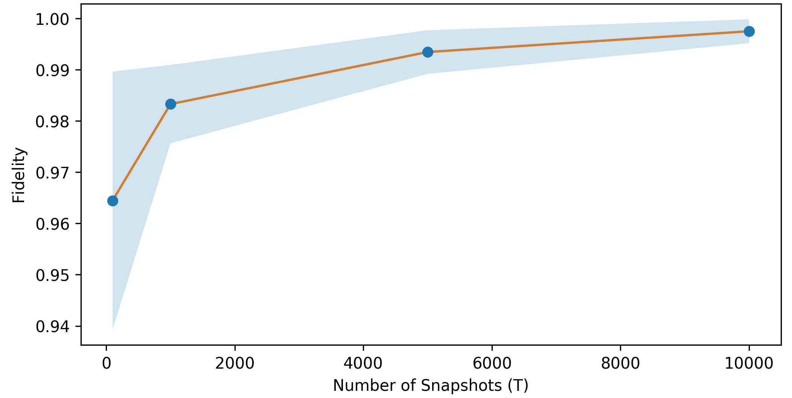

# This cell is added by sphinx-gallery
# It can be customized to whatever you like
%matplotlib inline
Quantum Feature Maps with PennyLane¶
Based on Analysis and synthesis of feature map for kernel-based quantum classifier
Main idea of feature map¶
We want to translate our original space \(\mathbf{R}^N\) to \(\mathbf{C}^{2^N}\) Hilbert space. Main idea is to make non-separable points in the original space separable in the new space. This idea is very close to kernel-trick in classical SVM.
Here are two examples of non-separable data:
import warnings
warnings.filterwarnings("ignore")
import matplotlib.pyplot as plt
plt.style.use("ggplot")
from pennylane import numpy as np
import pennylane as qml
from sklearn.datasets import make_circles, make_moons
Circles¶
circles_points, circles_y = make_circles()
f = plt.figure(figsize=(8, 7))
clr = plt.scatter(circles_points[:, 0], circles_points[:, 1], c=circles_y)
plt.colorbar(clr)
f.show()
XOR¶
xor_points = np.c_[
np.c_[np.random.normal(-0.7, 0.05, 20), np.random.normal(-0.7, 0.05, 20)].T,
np.c_[np.random.normal(0.7, 0.05, 20), np.random.normal(0.7, 0.05, 20)].T,
np.c_[np.random.normal(-0.7, 0.05, 20), np.random.normal(0.7, 0.05, 20)].T,
np.c_[np.random.normal(0.7, 0.05, 20), np.random.normal(-0.7, 0.05, 20)].T
].T
xor_y = np.c_[np.zeros(40), np.ones(40)].T
f = plt.figure(figsize=(8, 7))
clr = plt.scatter(xor_points[:, 0], xor_points[:, 1], c=xor_y)
plt.colorbar(clr)
f.show()
Transformation of random points¶
We will use a random distrubution of points to “see” how the kernel classifies data
random_points = np.random.uniform(-1, 1, size=(3000, 2))
f = plt.figure(figsize=(7, 7))
plt.scatter(random_points[:, 0], random_points[:, 1])
f.show()
2d order Quantum Feature Map¶
Second order Quantum Feature Map \(U_{\Phi(\mathbf{X})}\) contains three operators \(U1_{\phi(x_1)}\), \(U1_{\phi(x_2)}\), \(U1_{\phi(x_1, x_2)}\) mixed with Hadamard gates and CNOT gates.
Here \(U1\) is a phase shifting gate:
And function phi is the following: $\(\phi = \begin{cases} \phi(x_{1, 2}) = x_{1, 2}\\ \phi(x_1, x_2) = \pi x_1x_2\end{cases}\)$
At first we will measure the value of \(\sigma^z\sigma^z\) operator: $\(\sigma^z\sigma^z = \mathbf{Z}\mathbf{Z} = \begin{bmatrix}1 & 0\\0 & -1\end{bmatrix} \bigotimes \begin{bmatrix}1 & 0\\0 & -1\end{bmatrix} = \begin{bmatrix} 1 & 0 & 0 & 0 \\ 0 & -1 & 0 & 0 \\ 0 & 0 & -1 & 0\\ 0 & 0 & 0 & 1\end{bmatrix}\)$
Implementation in PennyLane¶
dev = qml.device("default.qubit", 2)
@qml.qnode(dev)
def simplest_feature_map(x1, x2):
qml.Hadamard(wires=0)
qml.Hadamard(wires=1)
qml.U1(x1, wires=0)
qml.U1(x2, wires=1)
qml.Hadamard(wires=0)
qml.Hadamard(wires=1)
qml.CNOT(wires=[0, 1])
qml.U1(np.pi * x1 * x2, wires=1)
qml.CNOT(wires=[0, 1])
return qml.expval(qml.PauliZ(0) @ qml.PauliZ(1))
Circuit¶
print(simplest_feature_map.draw())
---------------------------------------------------------------------------
AttributeError Traceback (most recent call last)
Input In [11], in <cell line: 1>()
----> 1 print(simplest_feature_map.draw())
AttributeError: 'QNode' object has no attribute 'draw'
Lets see how the simple ZZ kernel works using the random data
zz_proj = [simplest_feature_map(x1, x2) for x1, x2 in random_points]
f = plt.figure(figsize=(8, 7))
clbr = plt.scatter(random_points[:, 0], random_points[:, 1], c=zz_proj)
plt.colorbar(clbr)
f.show()
Solution of circles problem¶
This behaviour seems perfect for the circles problem. We can separate circles problem with \(\mathbf{Z}\mathbf{Z}\) simplest feature map.
circles_proj_zz = [simplest_feature_map(x1, x2) for x1, x2 in circles_points]
f = plt.figure()
clbr = plt.scatter(circles_proj_zz, np.zeros_like(circles_proj_zz), c=circles_y)
plt.colorbar(clbr)
f.show()
We can see that all the points with value of \(\mathbf{Z}\mathbf{Z}\) projection less than \(0.6\) have class \(\mathbf{0}\) and all the points with projection value greater than \(0.675\) have class \(\mathbf{1}\)
Send it after class: YY-projection¶
Implement a kernel with \(\sigma^y\sigma^y\) operator, show its behaviour using the random dots, and apply it to the xor problem
@qml.qnode(dev)
def simplest_feature_map_yy(x1, x2):
#code me
yy_proj = [simplest_feature_map_yy(x1, x2) for x1, x2 in random_points]
f = plt.figure(figsize=(8, 7))
clbr = plt.scatter(random_points[:, 0], random_points[:, 1], c=yy_proj)
plt.colorbar(clbr)
f.show()
Solution of XOR problem¶
xor_proj_yy = [simplest_feature_map_yy(x1, x2) for x1, x2 in xor_points]
f = plt.figure()
clbr = plt.scatter(xor_proj_yy, np.zeros_like(xor_proj_yy), c=xor_y)
plt.colorbar(clbr)
f.show()
You should see that all the points with value of \(\mathbf{Y}\mathbf{Y}\) projection less than \(-0.2\) have class \(\mathbf{0}\) and all the points with projection value greater than \(0.2\) have class \(\mathbf{1}\)
Machine learning for quantum many-body problems¶
Storing and processing a complete description of an \(n\)-qubit quantum mechanical system is challenging because the amount of memory required generally scales exponentially with the number of qubits. The quantum community has recently addressed this challenge by using the classical shadow formalism, which allows us to build more concise classical descriptions of quantum states using randomized single-qubit measurements. It was argued in H. Y. Huang, R. Kueng, G. Torlai, V. V. Albert, J. Preskill, “Provably efficient machine learning for quantum many-body problems”, arXiv:2106.12627 [quant-ph] (2021) that combining classical shadows with classical machine learning enables using learning models that efficiently predict properties of the quantum systems, such as the expectation value of a Hamiltonian, correlation functions, and entanglement entropies.

In this demo, we describe one of the ideas presented in this reference for using classical shadow formalism and machine learning to predict the ground-state properties of the 2D antiferromagnetic Heisenberg model. We begin by learning how to build the Heisenberg model, calculate its ground-state properties, and compute its classical shadow. Finally, we demonstrate how to use kernel-based learning models to predict ground-state properties from the learned classical shadows. So let’s get started!
Building the 2D Heisenberg Model¶
We define a two-dimensional antiferromagnetic Heisenberg model as a square lattice, where a spin-1/2 particle occupies each site. The antiferromagnetic nature and the overall physics of this model depend on the couplings \(J_{ij}\) present between the spins, as reflected in the Hamiltonian associated with the model:
Here, we consider the family of Hamiltonians where all the couplings \(J_{ij}\) are sampled uniformly from [0, 2]. We build a coupling matrix \(J\) by providing the number of rows \(N_r\) and columns \(N_c\) present in the square lattice. The dimensions of this matrix are \(N_s \times N_s\), where \(N_s = N_r \times N_c\) is the total number of spin particles present in the model.
import itertools as it
import pennylane.numpy as np
import numpy as anp
def build_coupling_mats(num_mats, num_rows, num_cols):
num_spins = num_rows * num_cols
coupling_mats = np.zeros((num_mats, num_spins, num_spins))
coup_terms = anp.random.RandomState(24).uniform(0, 2,
size=(num_mats, 2 * num_rows * num_cols - num_rows - num_cols))
# populate edges to build the grid lattice
edges = [(si, sj) for (si, sj) in it.combinations(range(num_spins), 2)
if sj % num_cols and sj - si == 1 or sj - si == num_cols]
for itr in range(num_mats):
for ((i, j), term) in zip(edges, coup_terms[itr]):
coupling_mats[itr][i][j] = coupling_mats[itr][j][i] = term
return coupling_mats
For this demo, we study a model with four spins arranged on the nodes of a square lattice. We require four qubits for simulating this model; one qubit for each spin. We start by building a coupling matrix J_mat using our previously defined function.
Nr, Nc = 2, 2
num_qubits = Nr * Nc # Ns
J_mat = build_coupling_mats(1, Nr, Nc)[0]
We can now visualize the model instance by representing the coupling matrix as a networkx graph:
import matplotlib.pyplot as plt
import networkx as nx
G = nx.from_numpy_matrix(np.matrix(J_mat), create_using=nx.DiGraph)
pos = {i: (i % Nc, -(i // Nc)) for i in G.nodes()}
edge_labels = {(x, y): np.round(J_mat[x, y], 2) for x, y in G.edges()}
weights = [x + 1.5 for x in list(nx.get_edge_attributes(G, "weight").values())]
plt.figure(figsize=(4, 4))
nx.draw(
G, pos, node_color="lightblue", with_labels=True,
node_size=600, width=weights, edge_color="firebrick",
)
nx.draw_networkx_edge_labels(G, pos=pos, edge_labels=edge_labels)
plt.show()
We then use the same coupling matrix J_mat to obtain the Hamiltonian \(H\) for the model we have instantiated above.
import pennylane as qml
def Hamiltonian(J_mat):
coeffs, ops = [], []
ns = J_mat.shape[0]
for i, j in it.combinations(range(ns), r=2):
coeff = J_mat[i, j]
if coeff:
for op in [qml.PauliX, qml.PauliY, qml.PauliZ]:
coeffs.append(coeff)
ops.append(op(i) @ op(j))
H = qml.Hamiltonian(coeffs, ops)
return H
print(f"Hamiltonian =\n{Hamiltonian(J_mat)}")
Hamiltonian =
(0.44013459956570355) [X2 X3]
+ (0.44013459956570355) [Y2 Y3]
+ (0.44013459956570355) [Z2 Z3]
+ (1.399024099899152) [X0 X2]
+ (1.399024099899152) [Y0 Y2]
+ (1.399024099899152) [Z0 Z2]
+ (1.920034606671837) [X0 X1]
+ (1.920034606671837) [Y0 Y1]
+ (1.920034606671837) [Z0 Z1]
+ (1.9997345852477584) [X1 X3]
+ (1.9997345852477584) [Y1 Y3]
+ (1.9997345852477584) [Z1 Z3]
For the Heisenberg model, a property of interest is usually the two-body correlation function \(C_{ij}\), which for a pair of spins \(i\) and \(j\) is defined as the following operator:
def corr_function(i, j):
ops = []
for op in [qml.PauliX, qml.PauliY, qml.PauliZ]:
if i != j:
ops.append(op(i) @ op(j))
else:
ops.append(qml.Identity(i))
return ops
The expectation value of each such operator \(\hat{C}_{ij}\) with respect to the ground state \(|\psi_{0}\rangle\) of the model can be used to build the correlation matrix \(C\):
Hence, to build \(C\) for the model, we need to calculate its ground state \(|\psi_{0}\rangle\). We do this by diagonalizing the Hamiltonian for the model. Then, we obtain the eigenvector corresponding to the smallest eigenvalue.
import scipy as sp
ham = Hamiltonian(J_mat)
eigvals, eigvecs = sp.sparse.linalg.eigs(qml.utils.sparse_hamiltonian(ham))
psi0 = eigvecs[:, np.argmin(eigvals)]
We then build a circuit that initializes the qubits into the ground state and measures the expectation value of the provided set of observables.
dev_exact = qml.device("default.qubit", wires=num_qubits) # for exact simulation
def circuit(psi, observables):
psi = psi / np.linalg.norm(psi) # normalize the state
qml.QubitStateVector(psi, wires=range(num_qubits))
return [qml.expval(o) for o in observables]
circuit_exact = qml.QNode(circuit, dev_exact)
Finally, we execute this circuit to obtain the exact correlation matrix \(C\). We compute the correlation operators \(\hat{C}_{ij}\) and their expectation values with respect to the ground state \(|\psi_0\rangle\).
coups = list(it.product(range(num_qubits), repeat=2))
corrs = [corr_function(i, j) for i, j in coups]
def build_exact_corrmat(coups, corrs, circuit, psi):
corr_mat_exact = np.zeros((num_qubits, num_qubits))
for idx, (i, j) in enumerate(coups):
corr = corrs[idx]
if i == j:
corr_mat_exact[i][j] = 1.0
else:
corr_mat_exact[i][j] = (
np.sum(np.array([circuit(psi, observables=[o]) for o in corr]).T) / 3
)
corr_mat_exact[j][i] = corr_mat_exact[i][j]
return corr_mat_exact
expval_exact = build_exact_corrmat(coups, corrs, circuit_exact, psi0)
Once built, we can visualize the correlation matrix:
fig, ax = plt.subplots(1, 1, figsize=(4, 4))
im = ax.imshow(expval_exact, cmap=plt.get_cmap("RdBu"), vmin=-1, vmax=1)
ax.xaxis.set_ticks(range(num_qubits))
ax.yaxis.set_ticks(range(num_qubits))
ax.xaxis.set_tick_params(labelsize=14)
ax.yaxis.set_tick_params(labelsize=14)
ax.set_title("Exact Correlation Matrix", fontsize=14)
bar = fig.colorbar(im, pad=0.05, shrink=0.80 )
bar.set_label(r"$C_{ij}$", fontsize=14, rotation=0)
bar.ax.tick_params(labelsize=14)
plt.show()
Constructing Classical Shadows¶
Now that we have built the Heisenberg model, the next step is to construct a classical shadow representation for its ground state. To construct an approximate classical representation of an \(n\)-qubit quantum state \(\rho\), we perform randomized single-qubit measurements on \(T\)-copies of \(\rho\). Each measurement is chosen randomly among the Pauli bases \(X\),\(Y\), or \(Z\) to yield random \(n\) pure product states \(|s_i\rangle\) for each copy:
Each of the \(|s_i^{(t)}\rangle\) provides us with a snapshot of the state \(\rho\), and the \(nT\) measurements yield the complete set \(S_{T}\), which requires just \(3nT\) bits to be stored in classical memory. This is discussed in further detail in classical shadows demo

To prepare a classical shadow for the ground state of the Heisenberg model, we simply reuse the circuit template used above and reconstruct a QNode utilizing a device that performs single-shot measurements.
dev_oshot = qml.device("default.qubit", wires=num_qubits, shots=1)
circuit_oshot = qml.QNode(circuit, dev_oshot)
Now, we define a function to build the classical shadow for the quantum state prepared by a given \(n\)-qubit circuit using \(T\)-copies of randomized Pauli basis measurements
def gen_class_shadow(circ_template, circuit_params, num_shadows, num_qubits):
# prepare the complete set of available Pauli operators
unitary_ops = [qml.PauliX, qml.PauliY, qml.PauliZ]
# sample random Pauli measurements uniformly
unitary_ensmb = np.random.randint(0, 3, size=(num_shadows, num_qubits), dtype=int)
outcomes = np.zeros((num_shadows, num_qubits))
for ns in range(num_shadows):
# for each snapshot, extract the Pauli basis measurement to be performed
meas_obs = [unitary_ops[unitary_ensmb[ns, i]](i) for i in range(num_qubits)]
# perform single shot randomized Pauli measuremnt for each qubit
outcomes[ns, :] = circ_template(circuit_params, observables=meas_obs)
return outcomes, unitary_ensmb
outcomes, basis = gen_class_shadow(circuit_oshot, psi0, 100, num_qubits)
print("First five measurement outcomes =\n", outcomes[:5])
print("First five measurement bases =\n", basis[:5])
First five measurement outcomes =
[[ 1. 1. -1. -1.]
[ 1. -1. -1. 1.]
[ 1. -1. -1. -1.]
[-1. 1. 1. 1.]
[-1. -1. -1. -1.]]
First five measurement bases =
[[2 1 0 2]
[1 2 2 1]
[2 2 1 0]
[2 2 2 1]
[0 2 2 0]]
Furthermore, \(S_{T}\) can be used to construct an approximation of the underlying \(n\)-qubit state \(\rho\) by averaging over \(\sigma_t\):
def snapshot_state(meas_list, obs_list):
# undo the rotations done for performing Pauli measurements in the specific basis
rotations = [
qml.matrix(qml.Hadamard(wires=0)), # X-basis
qml.matrix(qml.Hadamard(wires=0)) @ qml.matrix(qml.adjoint(qml.S(wires=0))), # Y-basis
qml.matrix(qml.Identity(wires=0)), # Z-basis
]
# reconstruct snapshot from local Pauli measurements
rho_snapshot = [1]
for meas_out, basis in zip(meas_list, obs_list):
# preparing state |s_i><s_i| using the post measurement outcome:
# |0><0| for 1 and |1><1| for -1
state = np.array([[1, 0], [0, 0]]) if meas_out == 1 else np.array([[0, 0], [0, 1]])
local_rho = 3 * (rotations[basis].conj().T @ state @ rotations[basis]) - np.eye(2)
rho_snapshot = np.kron(rho_snapshot, local_rho)
return rho_snapshot
def shadow_state_reconst(shadow):
num_snapshots, num_qubits = shadow[0].shape
meas_lists, obs_lists = shadow
# Reconstruct the quantum state from its classical shadow
shadow_rho = np.zeros((2 ** num_qubits, 2 ** num_qubits), dtype=complex)
for i in range(num_snapshots):
shadow_rho += snapshot_state(meas_lists[i], obs_lists[i])
return shadow_rho / num_snapshots
To see how well the reconstruction works for different values of \(T\), we look at the fidelity of the actual quantum state with respect to the reconstructed quantum state from the classical shadow with \(T\) copies. On average, as the number of copies \(T\) is increased, the reconstruction becomes more effective with average higher fidelity values (orange) and lower variance (blue). Eventually, in the limit \(T\rightarrow\infty\), the reconstruction will be exact.

The reconstructed quantum state \(\sigma_T\) can also be used to evaluate expectation values \(\text{Tr}(O\sigma_T)\) for some localized observable \(O = \bigotimes_{i}^{n} P_i\), where \(P_i \in \{I, X, Y, Z\}\). However, as shown above, \(\sigma_T\) would be only an approximation of \(\rho\) for finite values of \(T\). Therefore, to estimate \(\langle O \rangle\) robustly, we use the median of means estimation. For this purpose, we split up the \(T\) shadows into \(K\) equally-sized groups and evaluate the median of the mean value of \(\langle O \rangle\) for each of these groups.
def estimate_shadow_obs(shadow, observable, k=10):
shadow_size = shadow[0].shape[0]
# convert Pennylane observables to indices
map_name_to_int = {"PauliX": 0, "PauliY": 1, "PauliZ": 2}
if isinstance(observable, (qml.PauliX, qml.PauliY, qml.PauliZ)):
target_obs = np.array([map_name_to_int[observable.name]])
target_locs = np.array([observable.wires[0]])
else:
target_obs = np.array([map_name_to_int[o.name] for o in observable.obs])
target_locs = np.array([o.wires[0] for o in observable.obs])
# perform median of means to return the result
means = []
meas_list, obs_lists = shadow
for i in range(0, shadow_size, shadow_size // k):
meas_list_k, obs_lists_k = (
meas_list[i : i + shadow_size // k],
obs_lists[i : i + shadow_size // k],
)
indices = np.all(obs_lists_k[:, target_locs] == target_obs, axis=1)
if sum(indices):
means.append(
np.sum(np.prod(meas_list_k[indices][:, target_locs], axis=1)) / sum(indices)
)
else:
means.append(0)
return np.median(means)
Now we estimate the correlation matrix \(C^{\prime}\) from the classical shadow approximation of the ground state.
coups = list(it.product(range(num_qubits), repeat=2))
corrs = [corr_function(i, j) for i, j in coups]
qbobs = [qob for qobs in corrs for qob in qobs]
def build_estim_corrmat(coups, corrs, num_obs, shadow):
k = int(2 * np.log(2 * num_obs)) # group size
corr_mat_estim = np.zeros((num_qubits, num_qubits))
for idx, (i, j) in enumerate(coups):
corr = corrs[idx]
if i == j:
corr_mat_estim[i][j] = 1.0
else:
corr_mat_estim[i][j] = (
np.sum(np.array([estimate_shadow_obs(shadow, o, k=k+1) for o in corr])) / 3
)
corr_mat_estim[j][i] = corr_mat_estim[i][j]
return corr_mat_estim
shadow = gen_class_shadow(circuit_oshot, psi0, 1000, num_qubits)
expval_estmt = build_estim_corrmat(coups, corrs, len(qbobs), shadow)
This time, let us visualize the deviation observed between the exact correlation matrix (\(C\)) and the estimated correlation matrix (\(C^{\prime}\)) to assess the effectiveness of classical shadow formalism.
fig, ax = plt.subplots(1, 1, figsize=(4.2, 4))
im = ax.imshow(expval_exact-expval_estmt, cmap=plt.get_cmap("RdBu"), vmin=-1, vmax=1)
ax.xaxis.set_ticks(range(num_qubits))
ax.yaxis.set_ticks(range(num_qubits))
ax.xaxis.set_tick_params(labelsize=14)
ax.yaxis.set_tick_params(labelsize=14)
ax.set_title("Error in estimating the\ncorrelation matrix", fontsize=14)
bar = fig.colorbar(im, pad=0.05, shrink=0.80)
bar.set_label(r"$\Delta C_{ij}$", fontsize=14, rotation=0)
bar.ax.tick_params(labelsize=14)
plt.show()
Training Classical Machine Learning Models¶
There are multiple ways in which we can combine classical shadows and machine learning. This could include training a model to learn the classical representation of quantum systems based on some system parameter, estimating a property from such learned classical representations, or a combination of both. In our case, we consider the problem of using kernel-based models to learn the ground-state representation of the Heisenberg model Hamiltonian \(H(x_l)\) from the coupling vector \(x_l\), where \(x_l = [J_{i,j} \text{ for } i < j]\). The goal is to predict the correlation functions \(C_{ij}\):
Here, we consider the following kernel-based machine learning model A. Jacot, F. Gabriel, and C. Hongler. “Neural tangent kernel: Convergence and generalization in neural networks”. NeurIPS, 8571–8580 (2018):
where \(\lambda > 0\) is a regularization parameter in cases when \(K\) is not invertible, \(\sigma_T(x_l)\) denotes the classical representation of the ground state \(\rho(x_l)\) of the Heisenberg model constructed using \(T\) randomized Pauli measurements, and \(K_{ij}=k(x_i, x_j)\) is the kernel matrix with \(k(x, x^{\prime})\) as the kernel function.
Similarly, estimating an expectation value on the predicted ground state \(\sigma_T(x_l)\) using the trained model can then be done by evaluating:
We train the classical kernel-based models using \(N = 70\) randomly chosen values of the coupling matrices \(J\).
# imports for ML methods and techniques
from sklearn.model_selection import train_test_split, cross_val_score
from sklearn import svm
from sklearn.kernel_ridge import KernelRidge
First, to build the dataset, we use the function build_dataset that takes as input the size of the dataset (num_points), the topology of the lattice (Nr and Nc), and the number of randomized Pauli measurements (\(T\)) for the construction of classical shadows. The X_data is the set of coupling vectors that are defined as a stripped version of the coupling matrix \(J\), where only non-duplicate and non-zero \(J_{ij}\) are considered. The y_exact and y_clean are the set of correlation vectors, i.e., the flattened correlation matrix \(C\), computed with respect to the ground-state obtained from exact diagonalization and classical shadow representation (with \(T=500\)),
respectively.
def build_dataset(num_points, Nr, Nc, T=500):
num_qubits = Nr * Nc
X, y_exact, y_estim = [], [], []
coupling_mats = build_coupling_mats(num_points, Nr, Nc)
for coupling_mat in coupling_mats:
ham = Hamiltonian(coupling_mat)
eigvals, eigvecs = sp.sparse.linalg.eigs(qml.utils.sparse_hamiltonian(ham))
psi = eigvecs[:, np.argmin(eigvals)]
shadow = gen_class_shadow(circuit_oshot, psi, T, num_qubits)
coups = list(it.product(range(num_qubits), repeat=2))
corrs = [corr_function(i, j) for i, j in coups]
qbobs = [x for sublist in corrs for x in sublist]
expval_exact = build_exact_corrmat(coups, corrs, circuit_exact, psi)
expval_estim = build_estim_corrmat(coups, corrs, len(qbobs), shadow)
coupling_vec = []
for coup in coupling_mat.reshape(1, -1)[0]:
if coup and coup not in coupling_vec:
coupling_vec.append(coup)
coupling_vec = np.array(coupling_vec) / np.linalg.norm(coupling_vec)
X.append(coupling_vec)
y_exact.append(expval_exact.reshape(1, -1)[0])
y_estim.append(expval_estim.reshape(1, -1)[0])
return np.array(X), np.array(y_exact), np.array(y_estim)
X, y_exact, y_estim = build_dataset(100, Nr, Nc, 500)
X_data, y_data = X, y_estim
X_data.shape, y_data.shape, y_exact.shape
((100, 4), (100, 16), (100, 16))
((100, 4), (100, 16), (100, 16))
((100, 4), (100, 16), (100, 16))
Now that our dataset is ready, we can shift our focus to the ML models. Here, we use two different Kernel functions: (i) Gaussian Kernel and (ii) Neural Tangent Kernel. For both of them, we consider the regularization parameter \(\lambda\) from the following set of values:
Next, we define the kernel functions \(k(x, x^{\prime})\) for each of the mentioned kernels:
Gaussian Kernel:
For the Gaussian kernel, the hyperparameter \(\gamma = N^{2}/\sum_{i=1}^{N} \sum_{j=1}^{N} ||x_i-x_j||^{2}_{2} > 0\) is chosen to be the inverse of the average Euclidean distance \(x_i\) and \(x_j\). The kernel is implemented using the radial-basis function (rbf) kernel in the sklearn library.
Neural Tangent Kernel:
The neural tangent kernel \(k^{\text{NTK}}\) used here is equivalent to an infinite-width feed-forward neural network with four hidden layers and that uses the rectified linear unit (ReLU) as the activation function. This is implemented using the neural_tangents library.
from neural_tangents import stax
init_fn, apply_fn, kernel_fn = stax.serial(
stax.Dense(32),
stax.Relu(),
stax.Dense(32),
stax.Relu(),
stax.Dense(32),
stax.Relu(),
stax.Dense(32),
stax.Relu(),
stax.Dense(1),
)
kernel_NN = kernel_fn(X_data, X_data, "ntk")
for i in range(len(kernel_NN)):
for j in range(len(kernel_NN)):
kernel_NN.at[i, j].set((kernel_NN[i][i] * kernel_NN[j][j]) ** 0.5)
---------------------------------------------------------------------------
ModuleNotFoundError Traceback (most recent call last)
Input In [20], in <cell line: 1>()
----> 1 from neural_tangents import stax
2 init_fn, apply_fn, kernel_fn = stax.serial(
3 stax.Dense(32),
4 stax.Relu(),
(...)
11 stax.Dense(1),
12 )
13 kernel_NN = kernel_fn(X_data, X_data, "ntk")
ModuleNotFoundError: No module named 'neural_tangents'
For the above two defined kernel methods, we obtain the best learning model by performing hyperparameter tuning using cross-validation for the prediction task of each \(C_{ij}\). For this purpose, we implement the function fit_predict_data, which takes input as the correlation function index cij, kernel matrix kernel, and internal kernel mapping opt required by the kernel-based regression models from the sklearn library.
from sklearn.metrics import mean_squared_error
def fit_predict_data(cij, kernel, opt="linear"):
# training data (estimated from measurement data)
y = np.array([y_estim[i][cij] for i in range(len(X_data))])
X_train, X_test, y_train, y_test = train_test_split(
kernel, y, test_size=0.3, random_state=24
)
# testing data (exact expectation values)
y_clean = np.array([y_exact[i][cij] for i in range(len(X_data))])
_, _, _, y_test_clean = train_test_split(kernel, y_clean, test_size=0.3, random_state=24)
# hyperparameter tuning with cross validation
models = [
# Epsilon-Support Vector Regression
(lambda Cx: svm.SVR(kernel=opt, C=Cx, epsilon=0.1)),
# Kernel-Ridge based Regression
(lambda Cx: KernelRidge(kernel=opt, alpha=1 / (2 * Cx))),
]
# Regularization parameter
hyperparams = [0.0025, 0.0125, 0.025, 0.05, 0.125, 0.25, 0.5, 1.0, 5.0, 10.0]
best_pred, best_cv_score, best_test_score = None, np.inf, np.inf
for model in models:
for hyperparam in hyperparams:
cv_score = -np.mean(
cross_val_score(
model(hyperparam), X_train, y_train, cv=5,
scoring="neg_root_mean_squared_error",
)
)
if best_cv_score > cv_score:
best_model = model(hyperparam).fit(X_train, y_train)
best_pred = best_model.predict(X_test)
best_cv_score = cv_score
best_test_score = mean_squared_error(
best_model.predict(X_test).ravel(), y_test_clean.ravel(), squared=False
)
return (
best_pred, y_test_clean, np.round(best_cv_score, 5), np.round(best_test_score, 5)
)
We perform the fitting and prediction for each \(C_{ij}\) and print the output in a tabular format.
kernel_list = ["Gaussian kernel", "Neural Tangent kernel"]
kernel_data = np.zeros((num_qubits ** 2, len(kernel_list), 2))
y_predclean, y_predicts1, y_predicts2 = [], [], []
for cij in range(num_qubits ** 2):
y_predict, y_clean, cv_score, test_score = fit_predict_data(cij, X_data, opt="rbf")
y_predclean.append(y_clean)
kernel_data[cij][0] = (cv_score, test_score)
y_predicts1.append(y_predict)
y_predict, y_clean, cv_score, test_score = fit_predict_data(cij, kernel_NN)
kernel_data[cij][1] = (cv_score, test_score)
y_predicts2.append(y_predict)
# For each C_ij print (best_cv_score, test_score) pair
row_format = "{:>25}{:>35}{:>35}"
print(row_format.format("Correlation", *kernel_list))
for idx, data in enumerate(kernel_data):
print(
row_format.format(
f"\t C_{idx//num_qubits}{idx%num_qubits} \t| ",
str(data[0]),
str(data[1]),
)
)
Overall, we find that the models with the Gaussian kernel performed better than those with NTK for predicting the expectation value of the correlation function \(C_{ij}\) for the ground state of the Heisenberg model. However, the best choice of \(\lambda\) differed substantially across the different \(C_{ij}\) for both kernels. We present the predicted correlation matrix \(C^{\prime}\) for randomly selected Heisenberg models from the test set below for comparison against the actual correlation matrix \(C\), which is obtained from the ground state found using exact diagonalization.
fig, axes = plt.subplots(3, 3, figsize=(14, 14))
corr_vals = [y_predclean, y_predicts1, y_predicts2]
plt_plots = [1, 14, 25]
cols = [
"From {}".format(col)
for col in ["Exact Diagonalization", "Gaussian Kernel", "Neur. Tang. Kernel"]
]
rows = ["Model {}".format(row) for row in plt_plots]
for ax, col in zip(axes[0], cols):
ax.set_title(col, fontsize=18)
for ax, row in zip(axes[:, 0], rows):
ax.set_ylabel(row, rotation=90, fontsize=24)
for itr in range(3):
for idx, corr_val in enumerate(corr_vals):
shw = axes[itr][idx].imshow(
np.array(corr_vals[idx]).T[plt_plots[itr]].reshape(Nr * Nc, Nr * Nc),
cmap=plt.get_cmap("RdBu"), vmin=-1, vmax=1,
)
axes[itr][idx].xaxis.set_ticks(range(Nr * Nc))
axes[itr][idx].yaxis.set_ticks(range(Nr * Nc))
axes[itr][idx].xaxis.set_tick_params(labelsize=18)
axes[itr][idx].yaxis.set_tick_params(labelsize=18)
fig.subplots_adjust(right=0.86)
cbar_ax = fig.add_axes([0.90, 0.15, 0.015, 0.71])
bar = fig.colorbar(shw, cax=cbar_ax)
bar.set_label(r"$C_{ij}$", fontsize=18, rotation=0)
bar.ax.tick_params(labelsize=16)
plt.show()
Send it after class:¶
Study the effect of the size of training data \(N\) and the number of Pauli measurements \(T\) for each Kernel you have seen. Calculate the average root-mean-square error (RMSE) in prediction for each kernel over all two-point correlation functions \(C_{ij}\). How does the performance improvement change as \(N\) and \(T\) increases?
Conclusion¶
This demo illustrates how classical machine learning models can benefit from the classical shadow formalism for learning characteristics and predicting the behavior of quantum systems. As argued in H. Y. Huang, R. Kueng, G. Torlai, V. V. Albert, J. Preskill, “Provably efficient machine learning for quantum many-body problems”, arXiv:2106.12627 [quant-ph] (2021), this raises the possibility that models trained on experimental or quantum data data can effectively address quantum many-body problems that cannot be solved using classical methods alone.